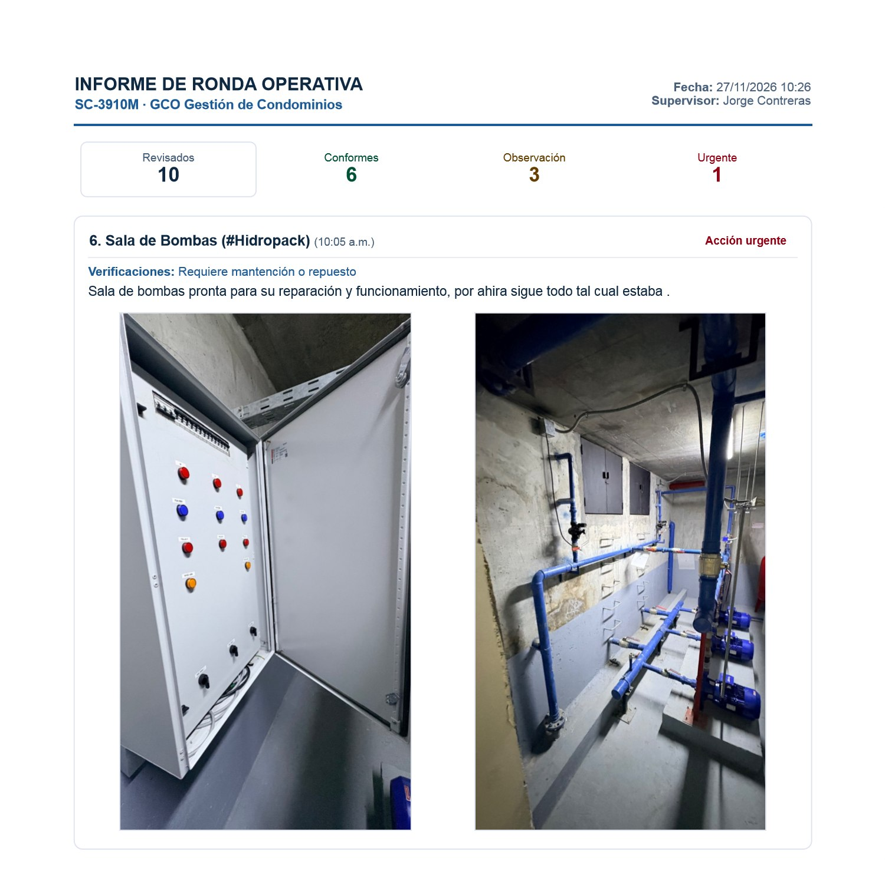
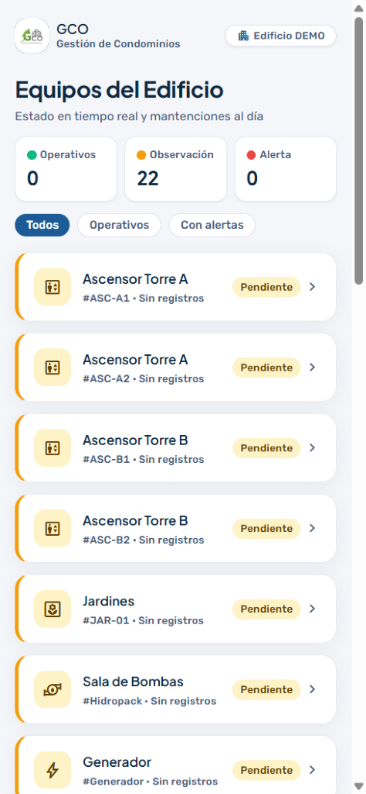

GCO App conecta a residentes, técnicos en terreno, comité de administración y administradores en una plataforma simple: escanea el código QR de cada equipo, reporta fallas con foto, registra mantenciones con firma digital incluso sin señal y genera informes PDF bajo la Ley 21.442.

Captura real: Ficha de equipo (#ASC-A1) con semáforo, visitas, PDF e incidencias.
Reemplaza las planillas aisladas, los grupos de WhatsApp saturados y los informes perdidos por un flujo único conectado desde la sala de máquinas hasta la reunión de comité.
Revisa el semáforo de todos los equipos, aprueba o revisa cotizaciones de trabajos y descarga el Acta / Informe Ejecutivo PDF en un clic.
Escanean el QR del ascensor o portón para ver su estado real y reportan fallas en 30 segundos con foto, sin instalar aplicaciones.
Ven sus órdenes pendientes, completan pautas rápidas, capturan firma digital en pantalla y trabajan incluso sin señal en subterráneos.
Gestiona tickets, órdenes, cotizaciones, inventario de equipos, láminas QR imprimibles y permisos de usuarios desde un panel central.
Durante la supervisión semanal presencial, nuestro equipo registra el estado de ascensores, sala de bombas, tableros eléctricos, portones y espacios comunes. Al finalizar, GCO App genera un PDF con KPIs automáticos, fotografías por sector y respaldo directo en Drive para el Comité.

Captura real: Portada con KPIs (Revisados, Conformes, Observación, Urgente) y Sala de Bombas.
Selecciona un módulo para conocer exactamente qué hace dentro de la plataforma y cómo se ve en el teléfono.
Cada ascensor, sala de bombas, portón, grupo electrógeno o área crítica cuenta con una ficha pública verificable al escanear su código QR.
Vista consolidada de toda la infraestructura del condominio sin tener que caminar hasta cada sala técnica para saber su estado.
Permite que cualquier residente o conserje reporte una falla en segundos desde el navegador de su teléfono, sin descargar apps.
Diseñado para salas de bombas, subterráneos y cajas de ascensores donde suele fallar la señal móvil.
Herramienta dedicada para que el Comité de Administración supervise las mantenciones y apruebe trabajos con respaldo formal.
Control operativo centralizado con selector multi-comunidad para administrar uno o varios edificios desde el mismo lugar.
Ficha individual de equipo (#ASC-A1) accesible escaneando el QR.
Así funciona un ciclo completo dentro de GCO App. Puedes navegar manualmente o pausar el recorrido.
Cada equipo del edificio tiene un código QR único. Al escanearlo desde cualquier cámara se abre al instante su ficha en GCO App sin descargar nada.
Si un residente detecta un problema, envía un ticket en segundos con foto y síntoma. Si es mantención programada, administración asigna la orden al técnico.
El técnico selecciona el tipo de intervención, marca la pauta de chequeo, adjunta fotos o PDF y captura su firma digital en la pantalla.
Al guardar el registro, el estado del equipo se actualiza en tiempo real y el comprobante o informe certificado queda disponible para toda la comunidad.
El comité ingresa al Portal Comité para evaluar cotizaciones pendientes, monitorear equipos en observación y descargar el Acta / Informe Ejecutivo PDF.

Todo lo que un comité o residente necesita saber antes de usar la plataforma en su comunidad.
No. GCO App es una aplicación web progresiva (PWA) que funciona directo desde el navegador del celular o computador al escanear el código QR o abrir el enlace de la comunidad. Si alguien quiere, también puede agregarla a su pantalla de inicio como acceso directo.
GCO App cuenta con soporte offline y cola de sincronización. El técnico puede registrar la mantención, completar la pauta y firmar en pantalla aunque no tenga internet; apenas recupere señal, la aplicación envía y publica el registro automáticamente.
No necesitas llenar formularios ni esperar claves: puedes entrar directamente a nuestra Demo en Vivo (Edificio DEMO) y recorrer el directorio de 22 equipos, revisar la ficha del ascensor #ASC-A1 y probar el flujo de reporte de incidencias.
Sí. La plataforma mantiene una bitácora histórica por cada equipo crítico (ascensores, bombas, portones, generadores) con fechas, responsables, informes técnicos PDF, incidencias resueltas y Actas Ejecutivas PDF descargables para el comité.
Desde el Panel de Administración generamos las láminas QR individuales de cada equipo en formato listo para imprimir y plastificar, con el código y enlace directo del edificio para ubicarlo en tableros, puertas técnicas o cabinas.
Cada vez que nuestro equipo de operaciones visita el edificio, genera desde GCO App un documento PDF con resumen KPI (sectores revisados, conformes, con observación y urgentes), hora exacta por espacio, checklist técnico y hasta 10 fotografías por sector respaldadas automáticamente en la nube. Puedes ver capturas reales en este artículo.
GCO App es parte de nuestra propuesta tecnológica para las comunidades que administramos en el Gran Concepción. Agenda un Diagnóstico Técnico sin costo o escríbenos por WhatsApp para evaluar su implementación en tu edificio.